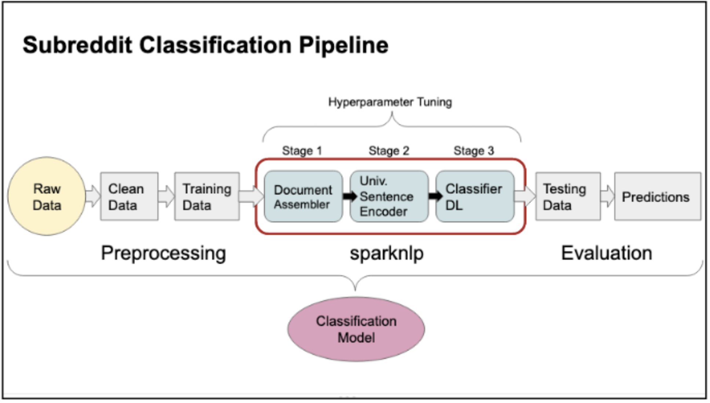
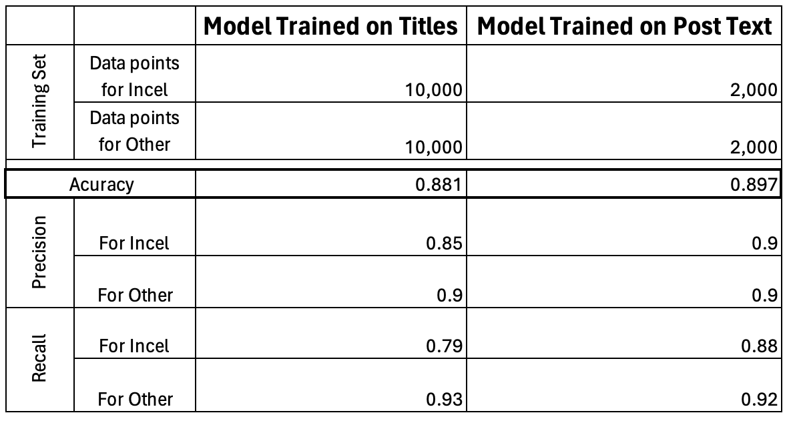
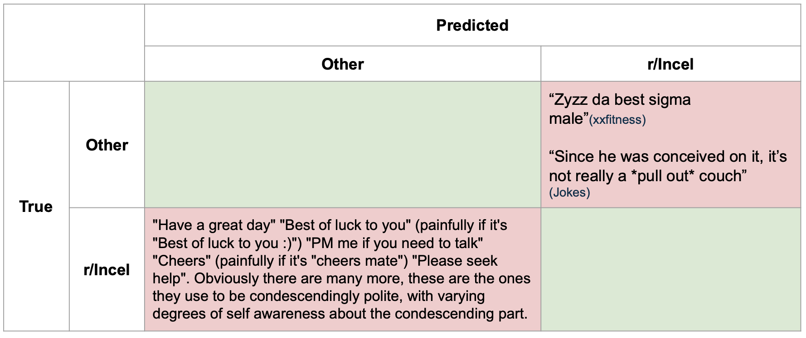

import findspark
findspark.init()
from sparknlp.annotator import *
from sparknlp.base import *
import sparknlp
from pyspark import SparkContext, SparkConf
from pyspark.sql import SQLContext, SparkSession
from pyspark.sql.functions import udf, col
import pyspark.sql.functions as F
from pyspark.sql.types import IntegerType, StringType
from pyspark.ml import Pipeline
from sparknlp.pretrained import PretrainedPipeline
import pandas as pd
import numpy as np
import glob
from sklearn.metrics import classification_report, accuracy_score
from sklearn.model_selection import train_test_split
# Initialize Spark
sparknlp.start()
conf = SparkConf().setAppName('subreddit-classification')
sc = SparkContext.getOrCreate()
spark = SQLContext(sc)
# Clean the data
df = df.withColumnRenamed('selftext', 'text')
df = df.select('subreddit', 'title')
df = df.filter(df.title != '[deleted]')\
.filter(df.title != '[removed]')\
.filter(df.title != '')
# Label the data 1 if from r/incel and 0 if not
df_incel = df.withColumn(
'label',
F.when((F.col("subreddit") == 'Incels') , '1')\
.otherwise('0')
)A Computational Analysis of Hate Speech Across Reddit - Large Language Models
Python
ML
NLP
LLM
Introduction
The internet has become a breeding ground for various ideologies, some of which propagate harmful narratives and hate speech. One such community that has gained notoriety in the past decade is the “incel” (involuntary celibate) movement, known for its misogynistic rhetoric and, in some cases, calls for violence against women. The banning of the r/Incels subreddit in 2017 marked a significant moment in Reddit’s content moderation efforts, but it also led to the dispersion of this community across other platforms and other subreddits.
This project aims to leverage the power of Natural Language Processing (NLP) and Machine Learning (ML) techniques to track the evolution of incel-related hate speech and sentiment on Reddit. By focusing on the banned r/Incels subreddit and its subsequent offshoots, we seek to understand how misogynistic language persists and evolves in online spaces, even after community bans.
Back in 2021 I conducted some analysis of this data. As you will see below, I leveraged Spark to ingest, and process Reddit posts, taking advantage of the then-free access to Reddit’s API. I then trained Large Language Models (LLMs) to classify the r/Incels subreddit posts, and applied this model to offshoots of this community post-ban, yielding interesting results.
With advancements in the NLP field, I wanted to revisit this 2021 project using some sentiment analysis techniques. This analysis can be found in a different notebook here.
I will, unfortunately, be using a much smaller dataset (only a small subset of the data I saved back in 2021) due to Reddits current API limitations. Hopefully, one day when I have a little time on my hands, I can get the data I need to from the Pushshift data dumps containing all historical reddit posts.
Using Large Language Models for Incel Subreddit Classification
Large language models (LLMs) are advanced AI systems trained on vast amounts of text data to understand and generate human-like language. LLMs can perform a wide range of language tasks, and can understand context and nuance in language. Fine-tuning can be done on specific datasets to adapt the model for particular tasks or domains.
In 2021 I used LLMs to classify posts as either originating from the r/Incels subreddit or from another subreddit. The primary objective was not to create a perfect classification model but to investigate whether the linguistic patterns and themes characteristic of incel rhetoric could be detected in posts from other subreddits.
I will dive into my code, and findings here!
Data Cleaning
The first step (at the time) was to use Reddit’s Pushshift API to gather all r/incel historical posts. Using spark, I read in the data with the following code, and began to clean it:
Training LLMs with SparkNLP
I used SparkNLP to train two LLMs, one trained using submission titles, and another using submission post text. Submission post text provides us with the benefit of a lot more context and words than a title, however not all submissions contain usable post text.

As seen in the pipeline graphic above and code below, I initialized the Document Assembler, Universal Sentence Encode, and Classifier DL for my LLM pipeline.
# SparkNLP Pipeline
document = DocumentAssembler()\
.setInputCol("title")\
.setOutputCol("document")
print("Document Done")
use = UniversalSentenceEncoder.pretrained()\
.setInputCols(["document"])\
.setOutputCol("sentence_embeddings")
print("Use Done")
classsifierdl = ClassifierDLApproach().setInputCols(["sentence_embeddings"])\
.setOutputCol("class")\
.setLabelColumn("label")\
.setMaxEpochs(10)\
.setEnableOutputLogs(True)\
.setLr(0.004)
print("Classifierd Done")
nlpPipeline = Pipeline(
stages = [
document,
use,
classsifierdl
])
The next step was to split the data into testing and training sets, and train the model. Performing this once using submission titles and again using submission post text I found that the posts model was slightly more accurate. The training data and accuracy, precision, and recall for both models can be seen in the table above.
While the accuracy is slightly better for the model trained on post text, the number of submissions the model was trained on was significantly lower (10,000 submissions vs. 2,000). This is because, after the cleaning process for the post text model, only 2,000 submissions remained. The implication is that this model, while it performs better, is less applicable as it cannot be used on 80% of the submissions. Therefore, going forward, I recommend using the model trained on submission titles.
Below is the code to train the title model:
# Split into test and training set
(train_set, test_set)= df_incel.randomSplit([0.8, 0.2], seed=100)
# Train the model
model_incel = nlpPipeline.fit(train_set)
# Predict Testing Data
df_incel= model_incel.transform(test_set).select("subreddit", "title","label", "document", "class.result").toPandas()
df_incel["result"] = df_incel["result"].apply(lambda x:x[0])Results
The LLMs performed well, providing valuable insights into the incel subcommunity on Reddit.
Model Interpretation
NLP allows us to examine how the model interprets textual data. While the submission title model is recommended, individual posts offer more information. Let’s analyze some incorrectly classified posts to understand our model and the language used (as shown in the mock confusion matrix table below).

The top right quadrant shows posts misclassified as r/Incel:
- From r/xxfitness: “Zyzz da best sigma male.” The model likely flagged the term “sigma male,” which is a common term in the incel vocabulary. This is valuable as, depending on frequency and tone of useage (ironic vs. serious) we can detect overlap in communities and/or identify at risk individuals that may benefit from early intervention prevention strategies.
- From r/Jokes: “Since he was conceived on it, it’s not really a pull out couch.” This misclassification suggests the incel subreddit contains significant sexual content and language.
The bottom left quadrant displays a post from the r/Incels subreddit that was not found by the model. It starts off by listing some quotes, “Have a great day,” “Cheers,” “Please seek help.” The post then goes on to say “Obviously there are many more, these are the ones they use to be condescendingly polite, with varying degrees of self awareness about the condescending part.” We can infer that the redditor is talking phrases that upset him as he believes they are said with condescending and disingenuous intentions. This is further evident by his clarifications that adding a smiley face to best wishes and (someone he has romantic feelings for) calling him mate makes the remark more painful.
It is interesting to hypothesis why the model missed this post, it could be that it saw the smiley faces, and all the best wishes and did not understand the context or sentiment the user had towards these phrases. It could also be that this post did not register because it is “more tame” than a majority of other posts which contain hateful and violent messaging. Some examples of post titles were: “reasons why women are the embodiment of evil,” and “proof that girls are nothing but trash that use men.” This misclassification highlights the prevalence of extreme misogyny in the subreddit and suggests a potential method for early intervention by identifying less radicalized individuals within hate groups.
Model Application
I applied the model to random subreddits and specific subreddits with known incel ideology connections.
Applying on Random Subreddits
Using the same code, I analyzed 5,000 random reddit submissions, and found the following:
- About 11% were classified as r/Incels submissions.
- Most matches came from r/AskReddit, r/Sex, and r/relationship_advice.
- Approximately 20% of r/Sex titles were classified as r/Incel, suggesting highly sexual content in incel titles.
A closer look at the actually titles and their classification could provide usefull insight into the model’s classification criteria.
Conclusion and Future Work
This study leveraged LLMs to analyze and track the evolution of incel-related content on Reddit. My findings reveal the persistence and adaptability of incel rhetoric across different subreddits, even after the banning of the original r/Incels community. The model’s ability to identify incel-like content in seemingly unrelated subreddits highlights the pervasive nature of this ideology and the potential for its spread.
Key insights include:
- The effectiveness of LLMs in detecting incel-related content, with high accuracy rates on both submission titles and post text.
- The identification of incel-like language in unexpected places, such as fitness and joke-related subreddits, indicating potential areas for early intervention.
- The persistence of incel ideology in offshoot communities, albeit with slightly lower detection rates, suggesting possible evolution in language or improved/stricter moderation from Reddit.
- The surprising similarity between male and female incel communities in terms of language use provides insight into the overlap in the communities messages.
These findings underscore the complexity of online hate speech and the challenges in moderating such content. They also demonstrate the potential of NLP techniques in understanding and addressing these issues.
Future Work
Natural Language Processing continues to offer exciting avenues for exploring human communication and online behavior. Building on this study, several directions for future research emerge:
- Temporal analysis: Train the model on a sliding window of data to better understand how incel language evolves over time.
- Sentiment analysis: Investigate the emotional undertones of incel-related content and track potential changes in sentiment over time.
- Error analysis: Conduct a deep dive into the model’s misclassifications to gain deeper insights into the nuances of incel content and its manifestations in various online communities.
- Cross-platform analysis: Extend the study to other social media platforms to compare and contrast the expression of incel ideology across different online environments.
- Intervention strategies: Develop and test AI-assisted intervention methods based on early detection of incel-like content.
By continuing to refine and apply NLP techniques to these complex social issues, we can work towards creating safer and more inclusive online spaces. Thank you for engaging with this analysis of LLMs applied to incel-related content. For a complementary perspective on this data, please refer to our sentiment analysis study, which further explores the emotional landscape of these online communities.